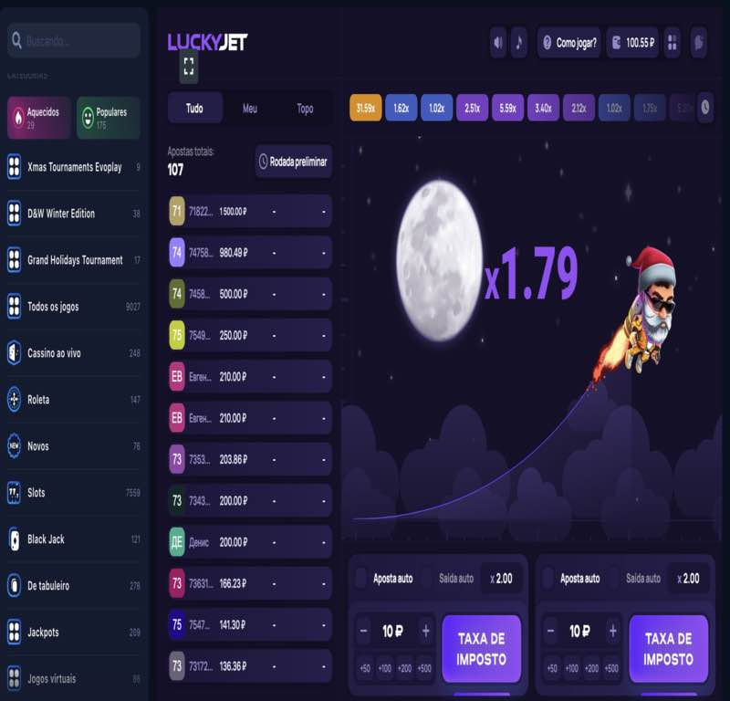
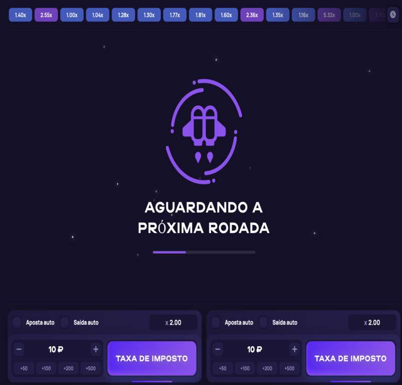
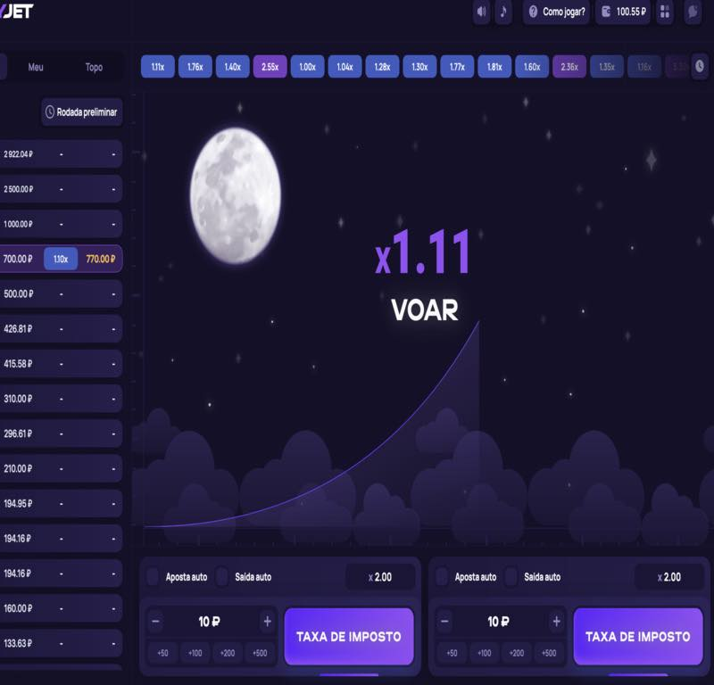
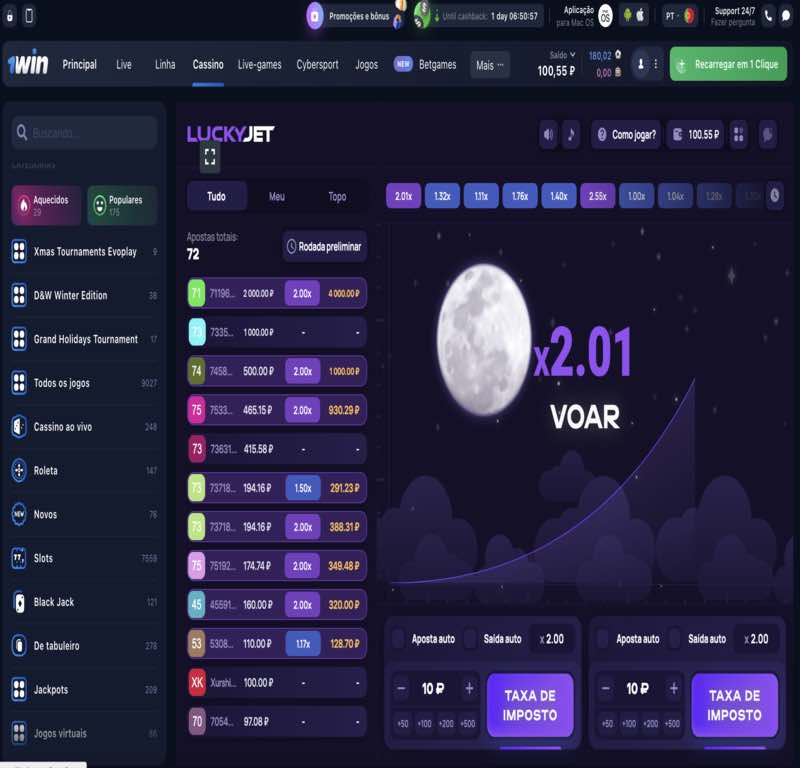
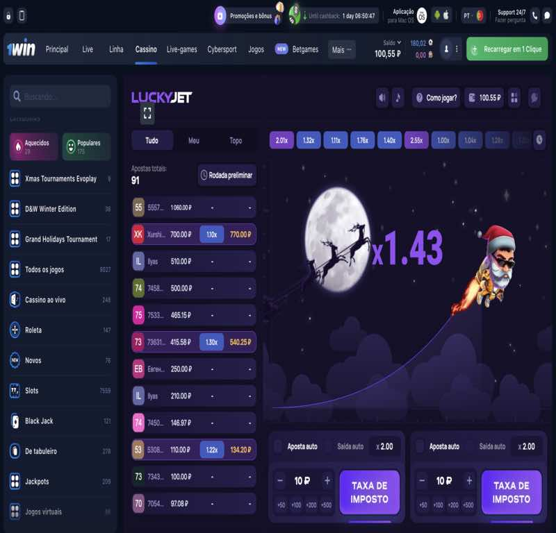

Jogue Lucky Jet
Lucky Jet é um jogo online em rápido crescimento. Lucky Jet se tornou um sucesso no casino online 1win. A cada dia, mais e mais jogadores descobrem Lucky Joe com sua mochila no Lucky Jet. Por que cada vez mais jogadores estão escolhendo o Lucky Jet?
Razões para a popularidade do jogo online Lucky Jet
Sim, o seu jogo favorito é sempre o seu favorito, mas você já passou por uma situação em que a interface de um jogo online é um pouco chata e até um pouco chata? Se você joga com frequência, isso é possível. Lucky Jet é o mesmo que Aviator ou Crash, mas com uma interface diferente. Em vez de um avião, você segue Lucky Joe com sua mochila. E as regras do jogo são as mesmas - fazer uma aposta e retirar dinheiro até o momento em que Lucky Joe começou a ganhar altura.
Muitos jogos de caça-níqueis oferecem jogos de jackpot e bônus onde seus ganhos potenciais podem ser ainda maiores. No entanto, o coeficiente de x50, x100 e até x200 é muito comum no Lucky Jet. A única questão é com que freqüência. Nos fóruns, os jogadores discutem que acima de x50 acontece várias vezes por hora, e mais de x150 geralmente ocorre uma vez a cada 2-3 horas.
Só você decide quando retirar seu dinheiro enquanto joga Lucky Jet. Manter e assumir riscos ou retirar-se imediatamente, mas com a garantia de um pequeno ganho? Estratégias muito diferentes para jogadores diferentes, mas o princípio é o mesmo - você decide quando parar e consertar a vitória. Ou uma perda se a sorte não estivesse do seu lado.
Talvez esta seja a principal razão da popularidade do Lucky Jet. Tudo depende do caso. Decida esperar que o coeficiente aumente para x10, e Lucky Joe voou com o coeficiente x5,1? Má sorte. E se decidir jogar um pouco mais conservadoramente e retirar para x3, você aumentaria sua aposta em 3 vezes. Existem muitos exemplos, mas a essência é a mesma - você não pode ganhar muito dinheiro sem sorte. Por outro lado, jogue racionalmente, escolhendo a estratégia correta para jogar Lucky Jet por dinheiro. Então, o papel da sorte diminuirá visivelmente, conforme você segue um certo algoritmo do jogo.
Como jogar e ganhar no Lucky Jet
O primeiro passo para vencer no Lucky Jet é escolher uma estratégia e uma tática para o jogo. Jogar conscientemente é a escolha dos jogadores de sucesso. Como exemplo, podemos dar duas estratégias diferentes e até opostas.
Estratégias e táticas no Lucky Jet
A essência da estratégia conservadora do jogo é fazer uma aposta e retirar com odds x1.1. Em outras palavras, você não ganhará muito, mas é quase impossível perder. Às vezes, haverá situações em que Lucky Joe sai voando com as chances x1.05, ou seja, perder é possível. Porém, nos fóruns, você encontrará ampla evidência de que, no final, é esse tipo de jogo que traz os ganhos e o dinheiro para a sua carteira.
Entre as desvantagens dessa estratégia, da qual os jogadores estão falando, está um pouco enfadonha, pois toda vez que você sacar dinheiro com o mesmo coeficiente. Nesse caso, é melhor selecionar a reprodução automática e a retirada ocorrerá automaticamente.
Risco significa esperar uma probabilidade alta, ou seja, mais de x100. Jogadores experientes sabem que essa proporção ocorre a cada 60-90 minutos, ou seja, 1-1,5 horas. Dê uma olhada na história e você verá a última vez em que as probabilidades foram acima de 100. Espere 1 hora e comece a apostar alto.
Claro, Lucky Jet tem opções de estratégia no meio - não tão cauteloso, mas também estratégias de jogo não tão arriscadas. Por exemplo, jogue com um multiplicador x2-x3. As chances são de cerca de 40% - 45%, ou seja, mesmo que a aposta seja perdida na próxima rodada, é possível ganhar de volta e até ganhar dinheiro.
Em qualquer caso, jogar Lucky Jet no casino online 1win exige cuidado. Primeiro, defina seus objetivos e responda à pergunta: "Por que estou jogando Lucky Jet?" Existem duas respostas principais.
O significado do jogo em Lucky Jet
Dependendo da resposta a esta pergunta, decida como jogar Lucky Jet. Jogar por dinheiro ou por diversão é sua escolha. Boa sorte com seu novo jogo. Grandes probabilidades e que a sorte esteja do seu lado!